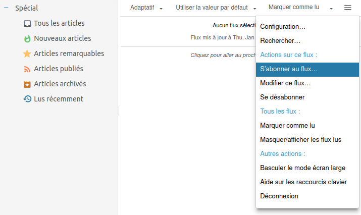
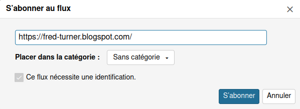
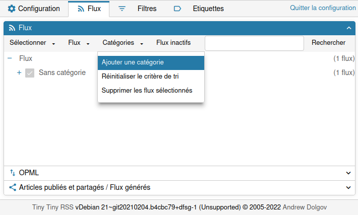
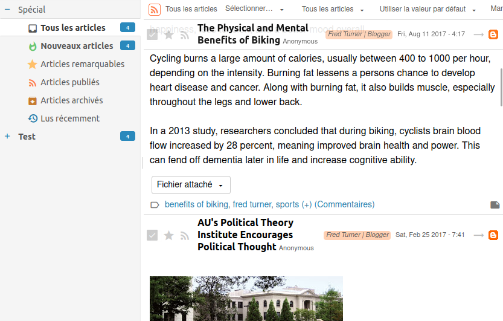
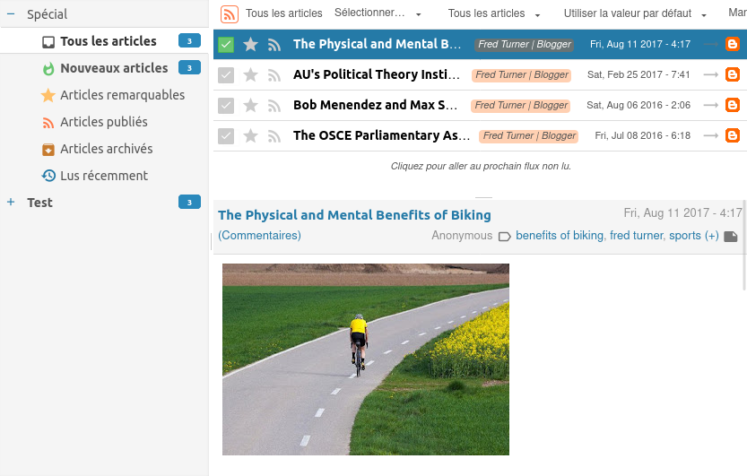

Using Tiny tiny RSS#
This tutorial explains how to use CLUB1’s Web feed aggregator.
This feed aggregator allows you to “subscribe” to multiple websites, in order to receive notifications when a new article is posted and to view them all in a common news feed.
Access your RSS feed account#
To access your account, you can log in with your CLUB1 credentials at this address: https://rss.club1.fr/
Subscribe to an RSS feed#
To receive the latest news from a website, you must “subscribe to its news feed”. To do this, the easiest way is to add it from the interface of Tiny Tiny RSS.
Note
You will need the address (also called URL) of the website you want to subscribe to. To obtain it, you can visit the site in question with a web browser from which it is possible to copy the URL from the search bar.
Once connected, click on the 3-bar menu logo at the top right, then on subscribe to feed…

Entrez l’url du site dont vous voulez obtenir le flux de nouvelles, par exemple ici le blog de Fred Turner. Si vous avez créé des catégories, vous pouvez en sélectionner une pour trier votre flux (c’est possible de le faire plus tard) puis cliquez sur S’abonner.
Warning
It is possible that a site does not offer news feed, in this case it will unfortunately not be possible to subscribe to it.

Sometimes several streams are available: Atom or RSS. It is advisable to select Atom as it is a more up to date data format.

There you go! You subscribed to your first news feed. From now on you can read the latest articles of this site from the aggregator.
You can of course subscribe to several feeds, it’s even recommended!
C’est bien joli tout ça, mais quand on suit beaucoup de sites, ça met un peu le bazar de tout rassembler dans un seul fil !
Pour résoudre ce problème, il est possible d’utiliser les catégories.
Utiliser les catégories#
Les catégories permettent de rassembler les flux auxquels vous vous êtes abonné dans des groupes, un peu comme des dossier. Elles sont utiles par exemple pour recréer un sous-fil d’actualités thématique, surtout lorsqu’on est abonné à beaucoup de sites.
Pour créer une catégorie, il faut retourner dans le menu en haut à droite de l’écran principal et cliquer sur Configuration…. Aller dans l’onglet Flux en haut de l’écran.

Vous pouvez depuis la nouvelle fenêtre ouverte créer une nouvelle catégorie pour ranger vos articles.
En cliquant sur le plus à gauche de chaque catégorie, on visualise les flux qu’il contient. Pour modifier la catégorie d’un flux, il suffit de cliquer glisser le flux vers une nouvelle catégorie.
Choose a display mode#
By default, the display is made in combined mode.

Pour utiliser un mode d’affichage en liste avec un panneau de lecture séparé, vous pouvez désactiver le “mode combiné” dans la configuration.

Tip
Il est possible de passer en mode trois colones avec le panneau de lecture à droite, ce qui est pratique lorsqu’on a un écran large.
Ceci se fait depuis le menu, en cliquant sur Basculer le mode écran large.